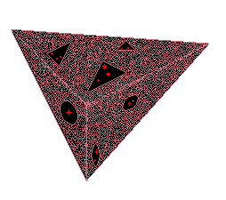

-

Ｄｏｎ’ｔ ｍｉｎｄ ｔｈｅ ｍａｔｒｉｘ ｂｅｈｉｎｄ ｕｓ．
Ｉｔ ｃａｎｎｏｔ ｓｔｏｐ ｍｅ． Ｐｅｒｈａｐｓ ｔｈｅ ＣｏＳ ｃａｎ，
ｂｕｔ ｔｈａｔ ｈａｓ ｙｅｔ ｔｏ ｂｅ ｓｅｅｎ．
Ｈｅｈ， ａｎｙｗａｙ， ｒｅｌａｙｉｎｇ ｄａｔａ ｎｏｗ．．．
-
Ｓｏｍｅｔｈｉｎｇ ｉｓ ｄｅｆｉｎｉｔｅｌｙ ｈｅｒｅ．
Ｂｕｔ， Ｉ ｃａｎ ｔｅｌｌ．．．
Ｉｔ ｗｉｌｌ ｔａｋｅ ｓｏｍｅ ｔｉｍｅ ｔｏ ｒｅｖｅａｌ．

Ｐｅｒｆｅｃｔ ｏｐｐｏｒｔｕｎｉｔｙ ｔｏ ｒｅｌａｘ， ｄｏｎ’ｔ ｙｏｕ ｔｈｉｎｋ？
Ｄｏｎ’ｔ ｗｏｒｒｙ， Ｉ’ｌｌ ｋｅｅｐ ａｔ ｉｔ．
Ｏｎｅ ｍｏｍｅｎｔ ａｔ ａ ｔｉｍｅ．．．
-
Ｆｉｎａｌｌｙ， Ｉ ｈａｖｅ ｒｅｖｅａｌｅｄ ｉｔ．
Ｐｒｏｂｅ ａｓ ｙｏｕ ｗｉｌｌ， ｐｒｏｂｅ ａｓ ｙｏｕ ｍｕｓｔ．